Chương IV — Chi dưới (Lower Extremities)
IV. Chi Dưới
GẬP HÔNG
Nằm ngửa và nằm sấp
Cơ chính: Thắt lưng
Cơ đối kháng: Cơ duỗi hông, cơ
vuông thắt lưng, cơ dựng sống thắt lưng
Cơ hiệp đồng: Cơ gập hông, cơ hoành,
cơ gập cổ
Gối của khách hàng gập với bàn chân hơi
nhấc khỏi bàn. Đặt tay lên gối của cô ấy.
Cản động tác gập.
Gối gập 90°. Đặt tay dưới gối của
khách hàng. Cản chuyển động xuống dưới.
81


82 Liệu Pháp Thần Kinh – Cơ (NKT)
DUỖI HÔNG
Nằm ngửa và nằm sấp
Kiểm tra cơ mông lớn và vùng thắt lưng – cùng
Gối gập, chân giang ra, bàn chân quay
ra ngoài. Đặt tay dưới bàn chân của
khách hàng. Cản chuyển động xuống dưới.
Cơ chính: Thắt lưng
Cơ đối kháng: Cơ gập hông
Cơ hiệp đồng: Cơ bắp chân, cơ khoeo,
nhóm cơ mông sau (hamstrings), cơ mông lớn,
cơ dựng sống thắt lưng, cơ duỗi cổ
Gối gập 90° và nhấc nhẹ khỏi bàn. Đặt tay
lên nhóm cơ mông sau (hamstrings) và cản
chuyển động hướng lên trên trong khi tay
kia đỡ cẳng chân, nắm phía trên mắt cá chân.
Lưu ý: Không thực hiện khi đau thắt lưng.
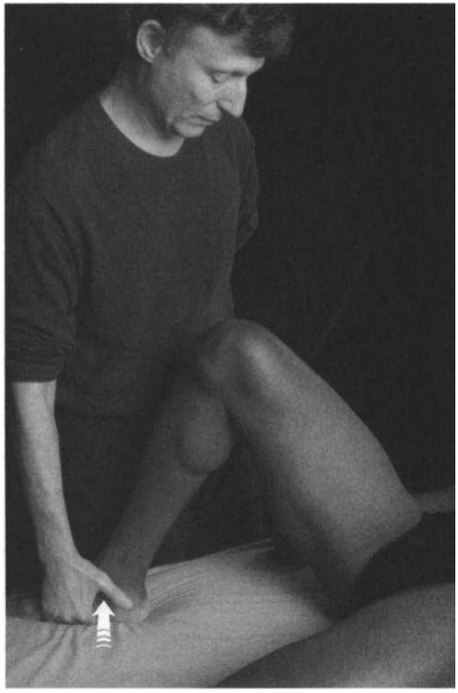

CƠ MÔNG LỚN
Nằm ngửa và nằm sấp
Điểm bám: Mặt sau xương cùng, xương chậu
và dải chậu – chày (iliotibial tract)
Chức năng: Duỗi hông
Gối gập 90°, chân thả ra ngoài mép bàn.
Tay của bạn đặt dưới bàn chân của khách
hàng. Cản chuyển động xuống dưới.
Chi Dưới 83
Cơ chính: Thắt lưng
Cơ đối kháng: Cơ gập hông
Cơ hiệp đồng: Cơ bắp chân, cơ khoeo,
nhóm cơ mông sau (hamstrings), cơ duỗi thắt lưng,
cơ duỗi cổ
Gối gập 90° và nhấc nhẹ khỏi bàn. Đặt tay
lên nhóm cơ mông sau (hamstrings) và cản
chuyển động hướng lên trên trong khi tay
kia đỡ cẳng chân, nắm phía trên mắt cá chân.
Lưu ý: Không thực hiện khi đau thắt lưng.

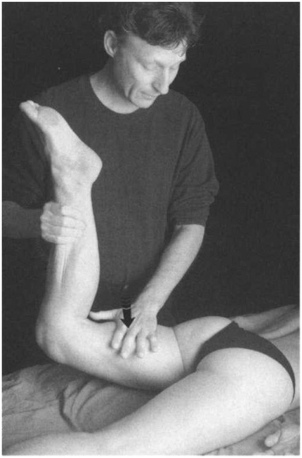
84 Liệu Pháp Thần Kinh – Cơ (NKT)
CƠ MÔNG VỪA
Nằm ngửa và nằm sấp
Điểm bám: Mào chậu, mặt ngoài xương chậu và
mảnh khroles lớn xương đùi
Chức năng: Giang và xoay trong xương
đùi tại khớp hông (các thớ trước)
Xoay trong
Gối gập 90°. Đặt tay phía trên mắt cá
chân. Cản chuyển động hướng ra ngoài
trong khi tay kia cố định gối ở
phía đối diện.
Cơ chính: Thắt lưng
Cơ đối kháng: Cơ khép hông và cơ
xoay ngoài hông
Cơ hiệp đồng: Cơ mác, cơ căng mạc
đùi, cơ mông nhỏ và
cơ mông lớn, cơ vuông thắt lưng,
cơ xiên, cơ gập nghiêng cổ

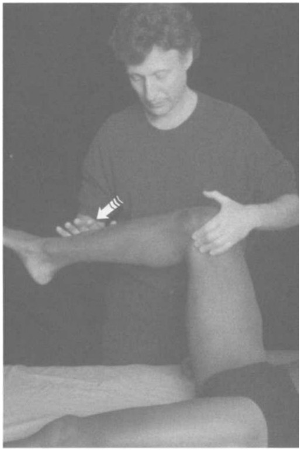
CƠ MÔNG VỪA (Gluteus medius)
(tiếp theo)
Nằm nghiêng và chi tiết
Khách hàng nằm nghiêng, chân thẳng ở vị trí gập 0°,
giang 30°. Đặt tay phía trên mắt cá chân của khách hàng.
Cản trở chuyển động hướng lên.
CƠ MÔNG NHỎ (Gluteus minimus)
Nằm nghiêng
Điểm bám: Mào chậu sau và mặt trước
của mấu chuyển lớn xương đùi
Chức năng: Giang và xoay trong
xương đùi ở khớp hông
Chi Dưới 85
Cơ chính: Thắt lưng
Cơ đối kháng: Cơ khép hông và cơ
xoay ngoài
Cơ hiệp đồng: Cơ mông lớn và
vừa, cơ căng mạc đùi, cơ vuông thắt lưng,
cơ hình lê,
cơ nhị đầu đùi
Chân thẳng ở vị trí gập 15°. Đặt tay phía trên
mắt cá chân. Cản trở chuyển động hướng lên.
**Các bài kiểm tra nằm ngửa và nằm sấp giống cơ mông
vừa.
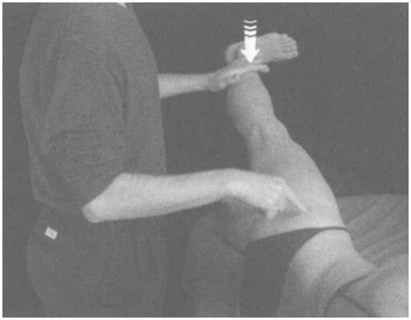

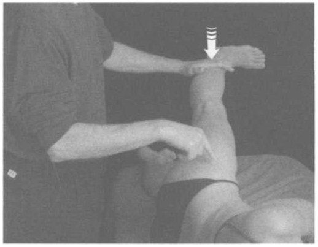
86 Liệu Pháp Thần Kinh – Cơ (NKT)
CƠ CĂNG MÁC ĐÙI (Tensor fasciae latae)
Nằm ngửa, nằm nghiêng,
và nằm sấp
Điểm bám: Mào chậu và băng chậu – chày đến
lồi cầu ngoài xương chày
Chức năng: Giang, xoay trong,
gập hông, duỗi gối; củng cố
chuyển động gối bên ngoài
Chi tiết cơ căng mạc đùi
Cơ chính: Thắt lưng
Cơ đối kháng: Cơ duỗi hông, cơ
xoay ngoài và khép hông, cơ gập gối
Cơ hiệp đồng: Cơ mác, cơ rộng
ngoài, cơ mông vừa và
nhỏ, cơ vuông thắt lưng,
cơ xiên, cơ nghiêng cổ bên ngoài
Chân khách hàng thẳng, giang nhẹ và
gập 30°. Quay bàn chân của anh ta vào trong. Đặt tay phía
trên mắt cá chân. Cản trở chuyển động hướng lên
và ra ngoài.


CƠ CĂNG MÁC ĐÙI (Tensor fasciae latae)
(tiếp theo)
Chân khách hàng thẳng ở vị trí gập 30°,
giang 30°. Đặt tay phía trên mắt cá chân của khách hàng.
Cản trở chuyển động hướng lên.
Chi Dưới 87
Chân thẳng. Đặt tay phía trên mắt cá chân.
Cản trở động tác giang.
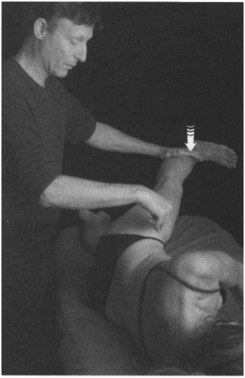
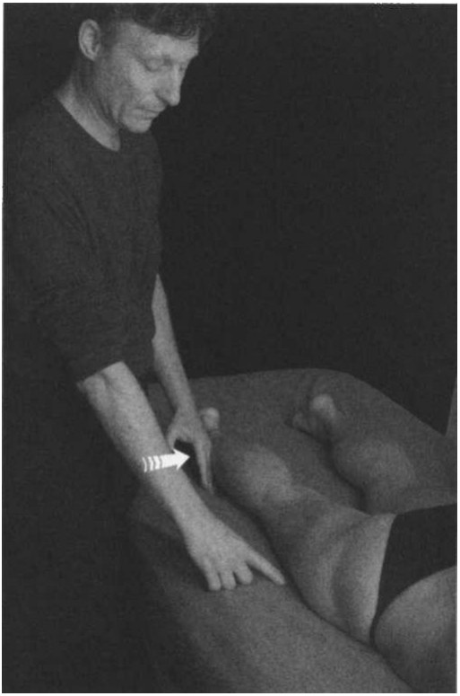
88 Liệu Pháp Thần Kinh – Cơ (NKT)
CƠ HÌNH LÊ (Piriformis)
Nằm ngửa và nằm sấp
Điểm bám: Mặt trước xương cùng và mấu
chuyển lớn xương đùi (vị trí phía trên)
Chức năng: Xoay ngoài hông
Cơ chính: Thắt lưng
Cơ đối kháng: Cơ xoay trong hông
Cơ hiệp đồng: Cơ mông lớn,
cơ mông vừa, cơ sinh đôi trên,
cơ bịt lỗ trong, cơ sinh đôi dưới,
cơ bịt lỗ ngoài, cơ vuông
đùi, cơ vuông thắt lưng,
nhóm cơ mông sau (hamstrings)
Chi tiết cơ hình lê
Gối gập 90°. Đặt một tay phía trên
bên trong mắt cá chân và tay kia đặt ở mặt ngoài
gối của khách hàng. Cản trở chuyển động của mắt cá chân
vào trong.
Gối gập 90°. Đặt tay phía trên
mắt cá chân bên trong của khách hàng. Cản trở chuyển động vào trong.

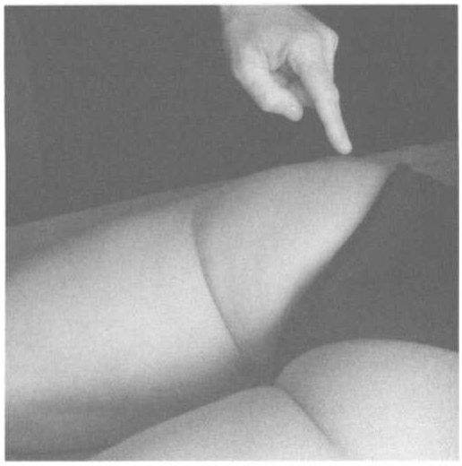
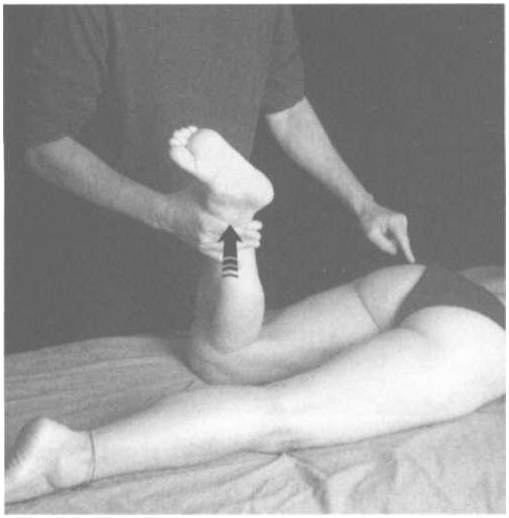
CƠ BỊT LỖ TRONG
(Obturator internus)
Nằm ngửa và nằm sấp
Điểm bám: Xương sit và mấu
chuyển lớn xương đùi bên dưới cơ hình lê
Chức năng: Xoay ngoài hông; "treo giữ"
khớp hông
Gối gập và xoay ngoài, bàn chân
chĩa xuống phía vào giữa bắp chân đối diện. Đặt tay
của bạn ở mặt đối diện mắt cá chân của khách hàng. Cản trở
chuyển động vào trong và xuống dưới.
Chi Dưới 89
Cơ chính: Thắt lưng
Cơ đối kháng: Cơ xoay trong hông
Cơ hiệp đồng: Cơ xoay ngoài hông,
cơ mông lớn, cơ mông vừa,
cơ mông nhỏ, cơ vuông
thắt lưng
Gối khách hàng gập 90° với hông giang
nhẹ. Đặt một tay ở mặt ngoài gối của cô ấy
để giữ ổn định và tay kia đặt phía trên
bên trong mắt cá chân. Cản trở chuyển động hướng lên
và vào trong.
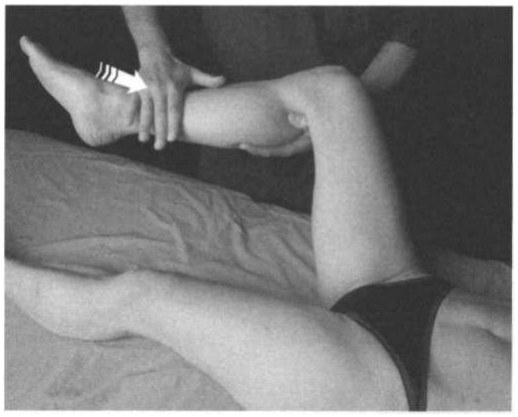
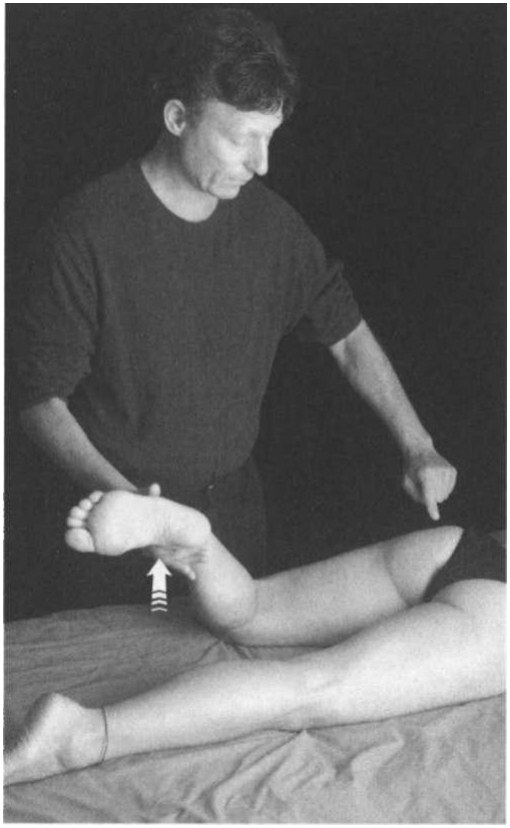
90 Liệu Pháp Thần Kinh – Cơ (NKT)
CƠ BỊT LỖ NGOÀI
(Obturator externus)
Nằm ngửa và nằm sấp
Điểm bám: Xương sit, lỗ bịt
và mấu chuyển lớn xương đùi bên dưới
cơ bịt lỗ trong
Chức năng: Xoay ngoài hông; "treo giữ"
khớp hông
Cơ chính: Thắt lưng
Cơ đối kháng: Cơ xoay trong hông
Cơ hiệp đồng: Cơ xoay ngoài hông,
cơ mông lớn, cơ mông vừa,
cơ mông nhỏ, cơ vuông
thắt lưng
Chi tiết cơ bịt lỗ ngoài
Gối khách hàng gập 90° với hông giang
45°. Đặt một tay ở mặt ngoài gối của cô ấy
để giữ ổn định và tay kia đặt phía trên
bên trong mắt cá chân. Cản trở chuyển động hướng lên
và vào trong.
Gối gập và xoay ngoài. Bàn chân
chĩa xuống phía gân Achilles bên đối diện. Đặt tay
ở mặt đối diện của mắt cá chân. Cản trở chuyển động vào trong
và xuống dưới.
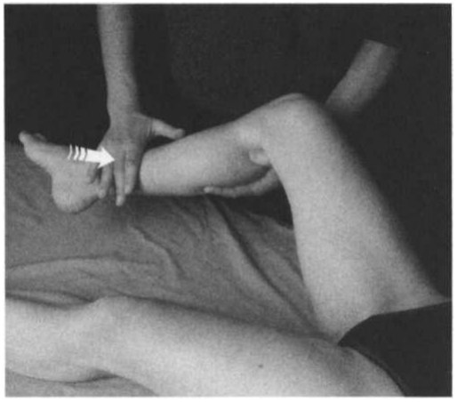

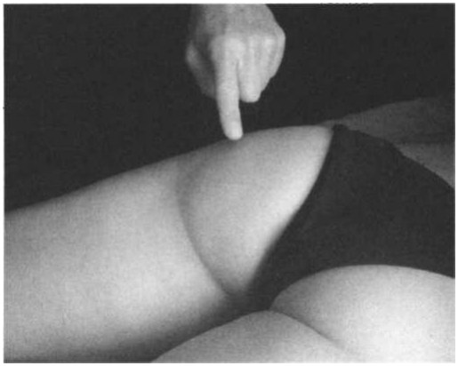
KHÉP HÔNG (Adduction)
(Bao gồm cả năm cơ khép)
Nằm sấp
Cơ chính: Thắt lưng
Cơ đối kháng: Cơ giang hông
Cơ hiệp đồng: Cơ khép hông, cơ gập hông,
cơ xoay trong
CƠ LƯỚI (Pectineus)
Điểm bám: Mặt trước xương mu và bên dưới
mấu chuyển nhỏ xương đùi
Chức năng: Gập, khép và xoay
trong hông
Cơ chính: Thắt lưng
Cơ đối kháng: Cơ duỗi hông,
cơ giang hông, cơ xoay ngoài
Cơ hiệp đồng: Cơ gập hông, cơ khép hông,
cơ xoay trong
Chi Dưới 91
Chân thẳng. Đặt tay ở mặt trong của
chân phía trên mắt cá chân. Cản trở động tác khép.
Chân thẳng, bàn chân quay hoàn toàn ra ngoài. Cản trở
động tác khép phía trên mắt cá chân.
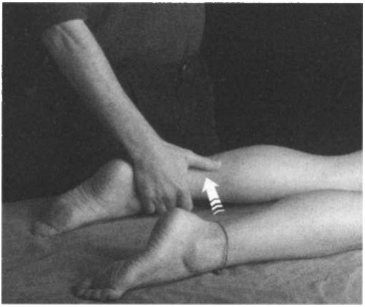

92 Liệu Pháp Thần Kinh – Cơ (NKT)
CƠ KHÉP NGẮN (Adductor brevis)
Điểm bám: Mặt trước xương mu và bên dưới
cơ lược trên xương đùi
Chức năng: Gập, khép và xoay
trong hông
Cơ chính: Thắt lưng
Cơ đối kháng: Cơ giang hông, cơ
xoay ngoài và duỗi hông
Cơ hiệp đồng: Cơ khép hông, cơ
xoay trong và gập hông
CƠ KHÉP DÀI (Adductor longus)
Điểm bám: Mặt trước xương mu và bên dưới
cơ khép ngắn trên xương đùi
Chức năng: Gập, khép và xoay
trong hông
Cơ chính: Thắt lưng
Cơ đối kháng: Cơ giang hông, cơ
xoay ngoài và duỗi hông
Cơ hiệp đồng: Cơ khép hông, cơ
xoay trong và gập hông
Chân thẳng, bàn chân quay ra ngoài 45°. Cản trở động tác khép
phía trên mắt cá chân.
Chân thẳng, bàn chân hướng thẳng lên. Cản trở động tác khép
phía trên mắt cá chân.
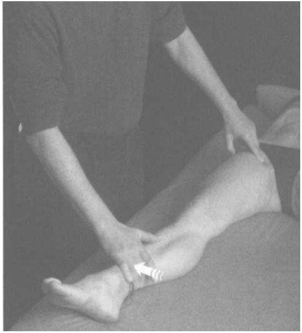
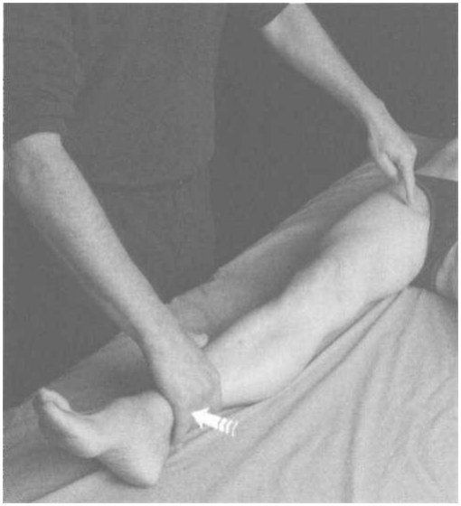
CƠ KHÉP LỚN (Adductor magnus)
Nằm ngửa và nằm sấp
Điểm bám: Phần trước – nhánh dưới của
xương mu, bên dưới cơ khép dài trên xương đùi
và củ khép
Phần sau – củ sit, nhánh
xương sit và củ khép
Chức năng: Phần trước – khép, gập và
xoay trong hông
Phần sau – duỗi và xoay ngoài
xương đùi ở khớp hông
Cơ chính: Thắt lưng
Cơ đối kháng: Phần trước – cơ giang
hông, duỗi hông và xoay ngoài
Phần sau – cơ gập hông và xoay
trong
Cơ hiệp đồng: Phần trước – cơ khép
hông, gập hông và xoay trong
Phần sau – cơ duỗi hông và xoay
ngoài
Chi Dưới 93
Chi tiết cơ khép lớn, nằm ngửa và nằm sấp
Phần trước: Chân thẳng, bàn chân quay vào trong 45°.
Cản trở động tác khép phía trên mắt cá chân.
Phần sau: Chân thẳng, gót chân quay vào trong
45°. Đặt tay phía trên gót chân phía trong. Cản trở
động tác duỗi.
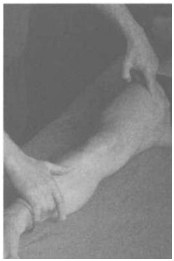


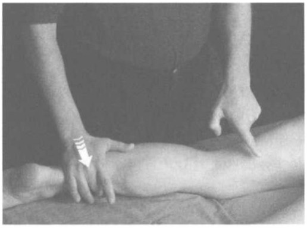
94 Liệu Pháp Thần Kinh – Cơ (NKT)
CƠ DUYÊN (Gracilis)
Điểm bám: Nhánh dưới của xương mu trước
và chân ngỗng (pes anserinus)
Chức năng: Khép hông, gập hông và xoay
trong gối đang gập
Chi tiết cơ duyên
Cơ chính: Thắt lưng
Cơ đối kháng: Cơ giang hông và
duỗi hông, cơ nhị đầu đùi
Cơ hiệp đồng: Cơ khép hông và
gập hông, cơ may, cơ bán gân
Chân thẳng, bàn chân quay hoàn toàn vào trong. Cản trở
động tác khép phía trên mắt cá chân.


CƠ MAY (Sartorius)
Điểm bám: Gai chậu trước trên
và chân ngỗng (pes anserinus)
Chức năng: Hỗ trợ gập, giang và
xoay ngoài xương đùi ở khớp hông, hỗ trợ
gập gối và xoay trong gối
Chi tiết cơ may
Chi Dưới 95
Cơ chính: Thắt lưng
Cơ đối kháng: Cơ duỗi hông, cơ khép
hông và xoay trong hông, cơ duỗi gối
và xoay ngoài gối
Cơ hiệp đồng: Cơ gập hông, cơ giang hông,
cơ xoay ngoài hông, cơ gập gối và
cơ xoay trong gối
Gối gập, hơi cao hơn mặt bàn. Đặt một tay
dưới gối để giữ ổn định và tay
kia đặt ở gót chân. Cản trở chuyển động của gót chân
về phía bẹn.
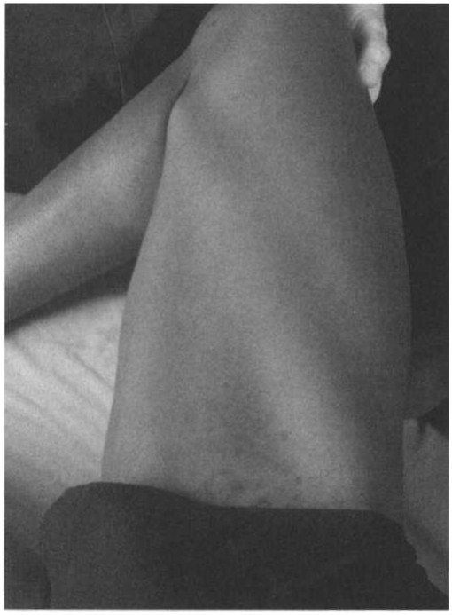

96 Liệu Pháp Thần Kinh – Cơ (NKT)
CƠ THẲNG ĐÙI (Rectus femoris)
Nằm ngửa và nằm sấp
Điểm bám: Gai chậu trước dưới
và mép trên của ổ khớp háng
Chức năng: Gập hông và duỗi
gối
Chân thẳng ở vị trí gập 30°. Yêu cầu khách hàng
khóa gối với các ngón chân chỉ hướng lên trần. Đặt
tay phía trên mắt cá chân. Cản trở động tác gập.
Cơ chính: Thắt lưng
Cơ đối kháng: Cơ bắp chân,
nhóm cơ mông sau (hamstrings), cơ mông lớn,
cơ duỗi thắt lưng
Cơ hiệp đồng: Ba cơ tứ đầu còn lại,
cơ chày trước, cơ gập hông, cơ thẳng bụng,
cơ gập cổ
Chân thẳng với gối đã khóa. Đặt tay của bạn
phía trên mắt cá chân. Cản trở động tác gập.
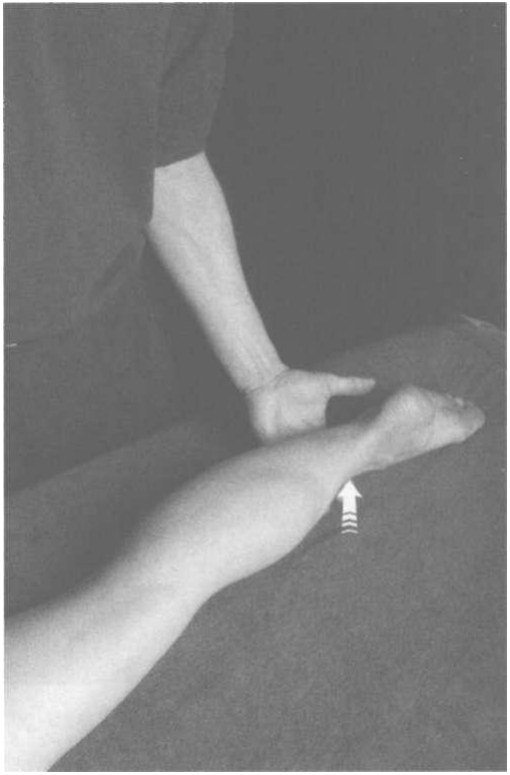
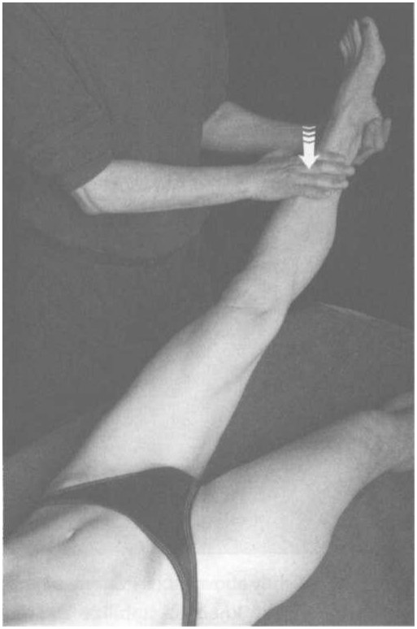
CƠ RỘNG GIỮA (Vastus intermedius)
Nằm ngửa và nằm sấp
Điểm bám: Mặt trước và ngoài thân
xương đùi, xương bánh chè và qua dây chằng bánh chè
đến củ chày
Chức năng: Duỗi gối
Chi Dưới 97
Cơ chính: Thắt lưng
Cơ đối kháng: Cơ gập gối
Cơ hiệp đồng: Cơ duỗi gối, cơ chày
trước, cơ chậu – thắt lưng (iliopsoas)
Gối gập 90°, bàn chân thẳng với các ngón chân chỉ lên. Giữ đỡ
mặt sau của gối. Cản trở động tác duỗi phía
trên mắt cá chân.
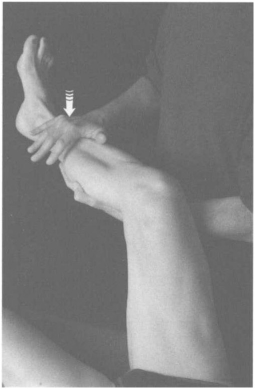

98 Liệu Pháp Thần Kinh – Cơ (NKT)
CƠ RỘNG TRONG (Vastus medialis)
Nằm ngửa và nằm sấp
Điểm bám: Phát triển gân thô (linea aspera) ở mặt
sau xương đùi, xương bánh chè và qua dây chằng
bánh chè đến củ chày
Chức năng: Duỗi gối
Cơ chính: Thắt lưng
Cơ đối kháng: Nhóm cơ mông sau phía trong
Cơ hiệp đồng: Cơ thẳng đùi, cơ rộng
giữa, cơ rộng ngoài,
cơ khép, cơ thắt lưng lớn (psoas), cơ chậu
Gối gập, cẳng chân xoay vào trong. Giữ đỡ
mặt sau gối của khách hàng bằng một tay và đặt
tay kia phía trên mắt cá chân phía trong.
Cản trở động tác duỗi.


CƠ RỘNG NGOÀI (Vastus lateralis)
Nằm ngửa và nằm sấp
Điểm bám: Phát triển gân thô (linea aspera) ở mặt
sau xương đùi, xương bánh chè và qua dây chằng
bánh chè đến củ chày
Chức năng: Duỗi gối
Chi Dưới 99
Cơ chính: Thắt lưng
Cơ đối kháng: Cơ nhị đầu đùi
Cơ hiệp đồng: Cơ thẳng đùi, cơ rộng
giữa, cơ rộng trong, băng chậu – chày,
cơ căng mạc đùi, cơ chậu
Gối gập, cẳng chân xoay ra ngoài. Giữ đỡ
mặt sau gối của khách hàng bằng một tay. Đặt
tay kia phía trên mắt cá chân phía ngoài. Cản trở
động tác duỗi.

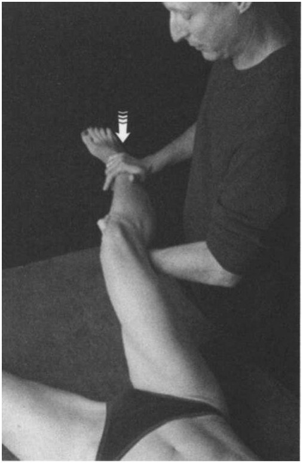
100 Liệu Pháp Thần Kinh – Cơ (NKT)
CƠ NHỊ ĐẦU ĐÙI
Nằm ngửa và nằm sấp
Điểm bám: Gò ngồi và đầu
trên xương mác
Chức năng: Duỗi hông, gập gối,
và xoay ngoài gối đang gập
Chi tiết cơ nhị đầu đùi
Gối gập, bàn chân xoay ra ngoài. Đặt tay
phía trên gót chân khách hàng. Cản trở động tác gập gối.
Cơ chính: Thắt lưng, ngực
Cơ đối kháng: Cơ gập hông, cơ
duỗi gối, cơ xoay trong gối
đang gập
Cơ hiệp đồng: Cơ bắp chân, cơ
mông lớn, cơ hình lê, cơ
vuông thắt lưng, cơ duỗi thắt lưng,
cơ duỗi cổ
Gối gập, bàn chân xoay ra ngoài. Đặt tay sau
gót chân khách hàng. Cản trở gập gối (có thể phải
đặt tay lên nhóm cơ mông sau để tránh chuột rút).
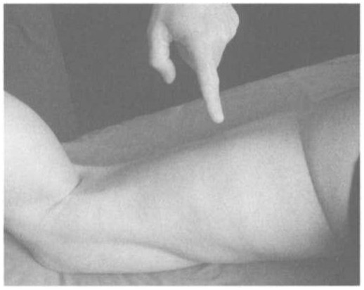


CƠ BÁN GÂN VÀ
CƠ BÁN MÀNG
Điểm bám: Cơ bán gân – gò
ngồi và chân ngỗng
Cơ bán màng – gò ngồi
và củ khớp trong xương chày
Chức năng: Duỗi hông, gập
gối, và xoay trong gối
đang gập
Gối gập, bàn chân xoay vào trong. Đặt tay
phía trên gót chân khách hàng. Cản trở động tác gập gối.
Chi Dưới 101
Gối gập, bàn chân xoay vào trong. Đặt tay
sau gót chân khách hàng. Cản trở động tác gập gối.


102 Liệu Pháp Thần Kinh – Cơ (NKT)
NHÓM CƠ MÔNG SAU (HAMSTRINGS)
Nằm ngửa và nằm sấp
Chức năng: Duỗi hông, gập gối
Cơ chính: Thắt lưng, ngực
Cơ đối kháng: Cơ gập hông, cơ
duỗi gối
Cơ hiệp đồng: Cơ gập ngón cái dài,
cơ khoeo, cơ bắp chân, cơ
mông lớn, cơ chỉnh thẳng thắt lưng, cơ
duỗi cổ
Gối gập, bàn chân thẳng. Đặt tay
phía trên gót chân khách hàng. Cản trở gập gối
Gối gập, bàn chân thẳng. Đặt tay lên
gót chân khách hàng. Cản trở động tác gập gối.


CƠ KHOEO
Nằm ngửa và nằm sấp
Điểm bám: Củ khớp ngoài xương đùi và
thân trên phía sau xương chày
Chức năng: Khởi động gập gối, xoay
trong xương chày
Chân thẳng. Đặt tay dưới gối khách hàng để
gập gối nhẹ. Đặt tay kia phía trên
gót trong, bàn chân xoay nhẹ vào trong.
Cản trở động tác gập gối.
Chi Dưới 103
Cơ chính: Thắt lưng, ngực
Cơ đối kháng: Nhóm cơ tứ đầu đùi,
cơ gập lưng cổ chân, cơ lật ngoài bàn chân
Cơ hiệp đồng: Cơ gập ngón cái dài,
cơ bắp chân, nhóm cơ mông sau, cơ
mông lớn, cơ chỉnh thẳng thắt lưng, cơ
duỗi cổ, cơ duyên, cơ may
Chân thẳng, gót xoay vào trong. Đặt tay
lên gót chân khách hàng. Cản trở gập gối (kiểm tra
10–15° gập gối đầu tiên).


104 Liệu Pháp Thần Kinh – Cơ (NKT)
CƠ BẮP CHÂN (GASTROCNEMIUS)
Nằm ngửa và nằm sấp
Điểm bám: Củ khớp trong và ngoài
xương đùi và gót chân
qua gân Achilles
Chức năng: Gập gan bàn chân cổ chân, gập
gối
Chân khách hàng thẳng. Đặt tay lên đầu
xương bàn chân. Cản trở gập gan bàn chân.
Cơ chính: Thắt lưng, ngực
Cơ đối kháng: Cơ gập lưng cổ chân,
cơ duỗi gối
Cơ hiệp đồng: Cơ gập ngón cái dài,
cơ bẹp, nhóm cơ mông sau, cơ
mông lớn, vùng thắt lưng – cùng,
cơ duỗi cổ
Chân thẳng, bàn chân đặt trên bàn. Đặt tay lên
đầu xương bàn chân khách hàng và đỡ mặt dưới
cổ chân bằng tay kia. Cản trở gập
gan bàn chân.


CƠ BẸP (SOLEUS)
Nằm ngửa và nằm sấp
Điểm bám: Mặt sau xương chày và xương mác
và gót chân qua gân Achilles
Chức năng: Gập gan bàn chân cổ chân
Khi gối khách hàng gập, đặt nắm tay
vào đầu xương bàn chân. Cản trở gập gan bàn chân.
Chi Dưới 105
Cơ chính: Thắt lưng, ngực
Cơ đối kháng: Cơ gập lưng cổ chân
Cơ hiệp đồng: Cơ gập ngón cái dài,
cơ bắp chân, nhóm cơ mông sau,
cơ mông lớn, vùng thắt lưng – cùng,
cơ duỗi cổ
Gối gập, bàn chân hơi nhấc khỏi bàn. Đặt
tay lên đầu xương bàn chân, đồng thời đỡ mặt
dưới cổ chân bằng tay kia. Cản trở gập
gan bàn chân.
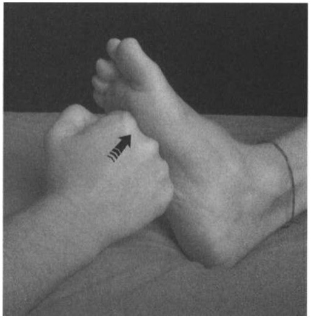
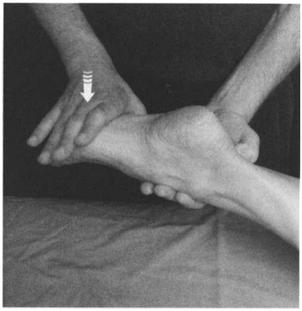
106 Liệu Pháp Thần Kinh – Cơ (NKT)
CƠ CHÀY SAU
Nằm ngửa và nằm sấp
Điểm bám: Mặt sau xương chày, xương mác và
xương thuyền, các xương cổ chân lân cận,
và các xương bàn chân ở mặt gan
Chức năng: Gập gan bàn chân cổ chân, lật
trong bàn chân
Chân khách hàng thẳng, bàn chân xoay vào trong. Đặt
các ngón tay lên gốc ngón cái. Cản trở
gập gan bàn chân và lật trong.
Cơ chính: Thắt lưng, ngực
Cơ đối kháng: Cơ gập lưng cổ chân,
cơ lật ngoài bàn chân
Cơ hiệp đồng: Cơ gập ngón cái dài,
cơ bắp chân, nhóm cơ mông sau
Chân thẳng, bàn chân xoay vào trong. Đặt tay
lên mặt trong gốc bàn chân và đỡ mặt dưới
cổ chân bằng tay kia. Cản trở gập gan bàn chân.
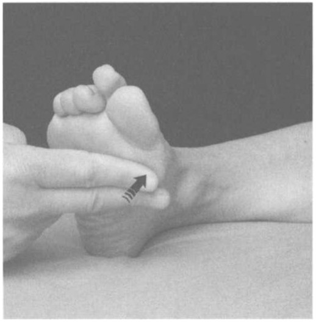

CƠ CHÀY TRƯỚC
Nằm ngửa và nằm sấp
Điểm bám: Củ khớp ngoài và thân ngoài
xương chày, màng liên xương và
gốc xương bàn chân thứ nhất (mặt gan),
xương chêm trong thứ nhất (mặt gan)
Chức năng: Gập lưng cổ chân, lật
trong bàn chân
Chân khách hàng thẳng, cổ chân hơi
gập gan bàn chân. Cản trở gập lưng phía trên
gốc ngón cái.
Chi Dưới 107
Cơ chính: Thắt lưng, ngực
Cơ đối kháng: Cơ gập gan bàn chân cổ chân,
cơ lật ngoài bàn chân
Cơ hiệp đồng: (Gập lưng) cơ
tứ đầu đùi, cơ thắt lưng – chậu, cơ duỗi
ngón cái dài; (Lật trong) các cơ
của cung trong, cơ khép, cơ thắt lưng – chậu
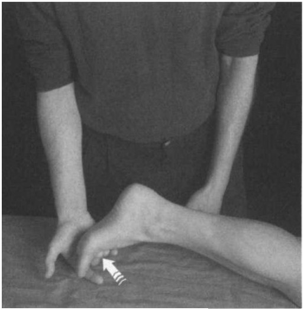

108 Liệu Pháp Thần Kinh – Cơ (NKT)
CƠ MÁC THỨ BA
Nằm ngửa và nằm sấp
Điểm bám: Phần dưới trước xương mác và
gốc xương bàn chân thứ năm
Chức năng: Lật ngoài bàn chân kèm gập lưng cổ chân
Cản trở lật ngoài bàn chân ở tư thế gập lưng cổ chân.
Cơ chính: Thắt lưng, ngực
Cơ đối kháng: Cơ lật trong bàn chân kèm
gập gan bàn chân
Cơ hiệp đồng: Cơ mác dài và
ngắn, cơ duỗi ngón, cơ căng
mạc đùi, cơ mông vừa và
cơ mông nhỏ, cơ vuông thắt lưng
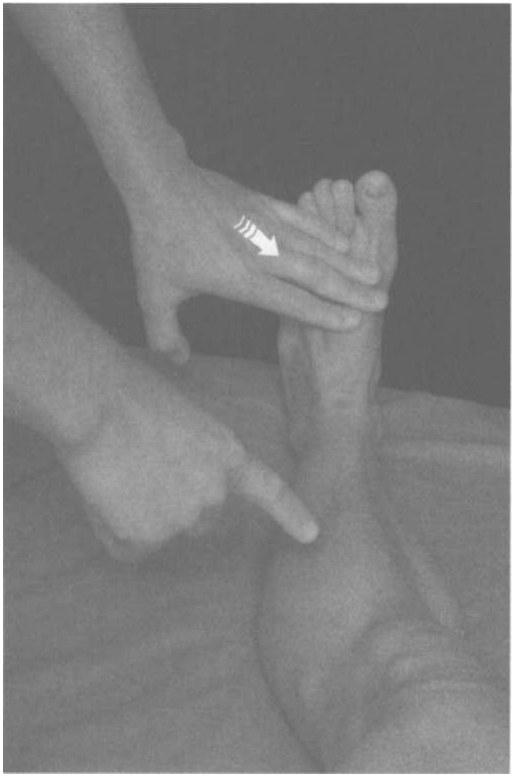

CƠ MÁC DÀI
VÀ NGẮN
Nằm ngửa và nằm sấp
Điểm bám: Cơ mác dài – đầu và hai phần ba
trên thân ngoài xương mác
và gốc xương bàn chân thứ nhất, xương
chêm thứ nhất (mặt gan)
Cơ mác ngắn – hai phần ba dưới thân
xương mác và gốc xương bàn chân thứ năm
Chức năng: Lật ngoài bàn chân kèm gập
gan bàn chân; giữ các cung bàn chân
Cản trở lật ngoài bàn chân ở tư thế gập
gan bàn chân.
Chi Dưới 109
Cơ chính: Thắt lưng, ngực
Cơ đối kháng: Cơ lật trong bàn chân, cơ
gập lưng cổ chân
Cơ hiệp đồng: Cơ căng mạc đùi,
cơ mông vừa và nhỏ,
cơ vuông thắt lưng, cơ xiên,
cơ gập cổ bên
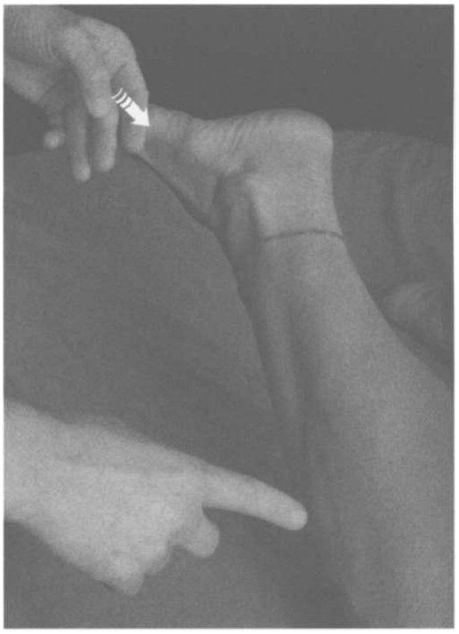
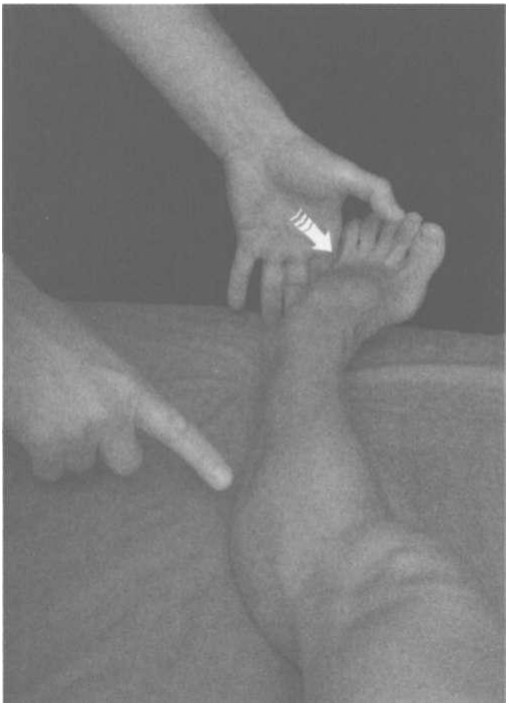
110 Liệu Pháp Thần Kinh – Cơ (NKT)
LẬT TRONG BÀN CHÂN
Nằm ngửa và nằm sấp
Đặt tay lên cung trong bàn chân, tay kia
giữ cố định cổ chân. Cản trở động tác lật trong.
Cơ chính: Thắt lưng
Cơ đối kháng: Cơ lật ngoài bàn chân
Cơ hiệp đồng: Cơ bắp chân phía trong,
cơ mông sau trong, cơ khép, cơ thắt lưng lớn (psoas)
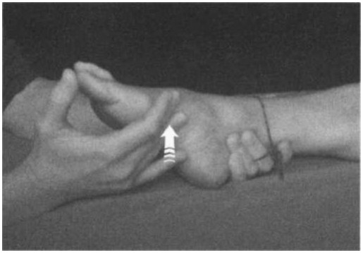
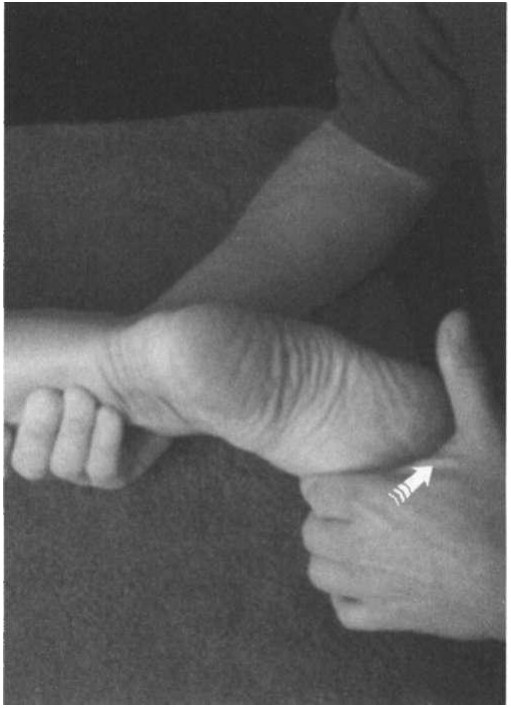
LẬT NGOÀI BÀN CHÂN
Nằm ngửa và nằm sấp
Chân thẳng. Đặt tay lên mặt ngoài bàn chân
khách hàng. Cản trở động tác lật ngoài.
Chi Dưới 111
Cơ chính: Thắt lưng, ngực
Cơ đối kháng: Cơ lật trong bàn chân
Cơ hiệp đồng: Cơ căng mạc đùi,
cơ mông vừa và nhỏ,
cơ vuông thắt lưng, cơ xiên,
cơ cổ bên, cơ gập cổ


112 Liệu Pháp Thần Kinh – Cơ (NKT)
CƠ GẬP NGÓN CÁI
DÀI
Nằm ngửa
Điểm bám: Mặt sau xương mác và đốt
xa ngón cái – mặt gan
Chức năng: Gập ngón cái, gập gan bàn chân
cổ chân
Cơ chính: Thắt lưng
Cơ đối kháng: Cơ duỗi
ngón cái dài
Cơ hiệp đồng: Cơ gập lưng cổ chân, cơ
gập ngón dài, nhóm cơ mông sau,
cơ mông lớn, cơ duỗi thắt lưng
Đặt ngón trỏ lên mặt gan ngón cái khách hàng
đang hơi duỗi. Cản trở động tác gập.
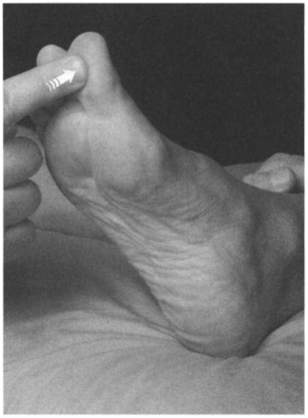
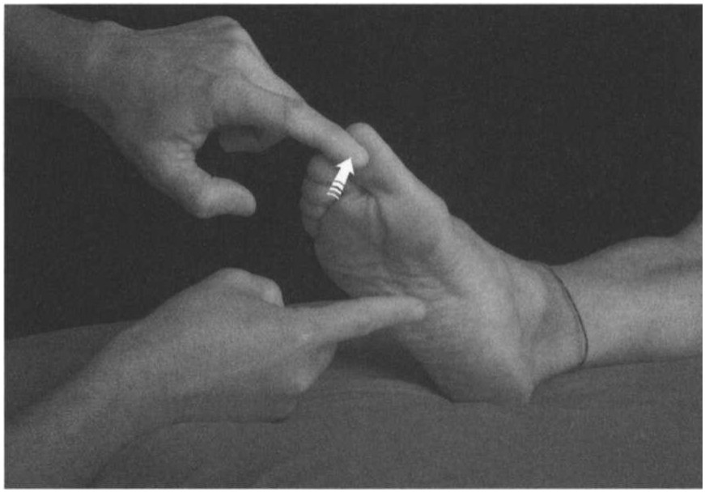
Chi Dưới 113
CƠ GẬP NGÓN CÁI
DÀI
(tiếp theo)
Nằm sấp
Chân thẳng. Đặt ngón trỏ lên ngón cái.
Cản trở động tác gập.
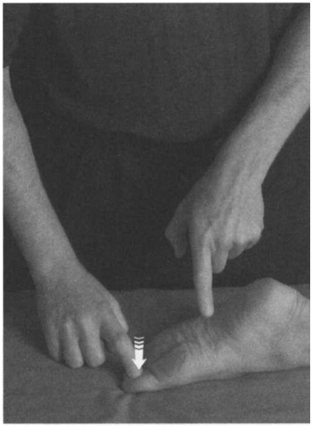

114 Liệu Pháp Thần Kinh – Cơ (NKT)
CƠ DUỖI NGÓN CÁI
DÀI
Nằm ngửa và nằm sấp
Điểm bám: Thân trước xương mác và
màng liên xương
Chức năng: Duỗi ngón cái, gập lưng
cổ chân
Cơ chính: Thắt lưng
Cơ đối kháng: Cơ gập ngón cái dài
Cơ hiệp đồng: Cơ duỗi ngón
dài, cơ chày trước, cơ tứ đầu đùi,
cơ gập hông
Khách hàng cuốn bốn ngón ngoài vào trong. Đặt
ngón trỏ lên mặt sau ngón cái, đốt xa.
Cản trở động tác duỗi.
Đặt ngón trỏ lên mặt lưng ngón cái
khách hàng. Cản trở động tác duỗi.
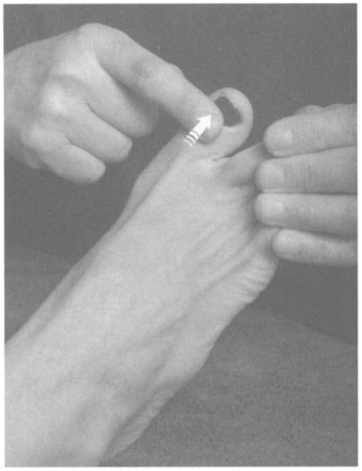
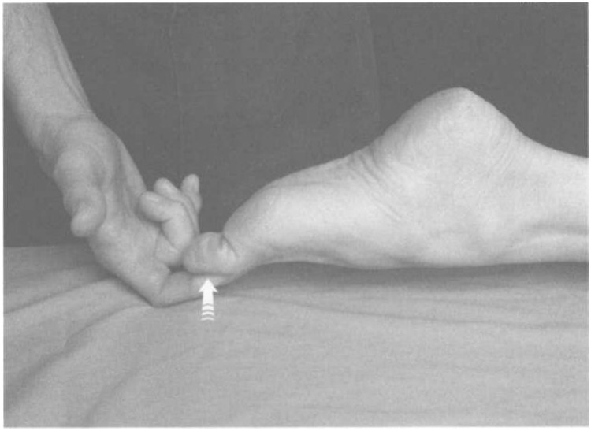
CƠ DUỖI NGÓN
Nằm ngửa
Điểm bám: Lồi cầu ngoài xương chày,
hai phần ba trên của thân trước xương
mác và các xương ngón giữa và xa
của bốn ngón ngoài
Tác dụng: Duỗi bốn ngón ngoài
tại khớp bàn – ngón, hỗ trợ gập lưng
cổ chân
Cơ chính: Thắt lưng
Cơ đối kháng: Cơ gập ngón
dài, cơ gập gan bàn chân cổ chân
Cơ hiệp đồng: Cơ gập lưng cổ chân,
cơ tứ đầu đùi, cơ thắt lưng – chậu
Chi dưới 115
Đặt các ngón tay lên mặt lưng của
bốn ngón ngoài đang hơi gập. Cản
trở lực duỗi.
**Ở tư thế nằm sấp, thực hiện ngược bài kiểm tra nằm ngửa.
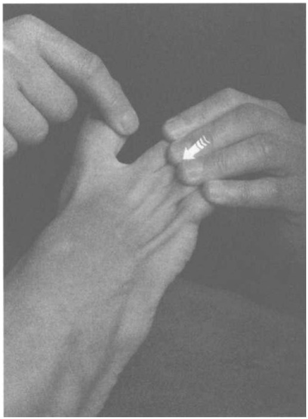
116 Neuro Kinetic Therapy
CƠ GẬP NGÓN
DÀI
Nằm ngửa và nằm sấp
Điểm bám: Mặt sau xương chày và các xương
ngón xa của bốn ngón ngoài
(mặt gan bàn chân)
Tác dụng: Gập bốn ngón ngoài,
gập gan bàn chân cổ chân
Cơ chính: Thắt lưng
Cơ đối kháng: Cơ duỗi ngón
dài
Cơ hiệp đồng: Cơ gập ngón cái dài,
cơ gập gan bàn chân cổ chân, nhóm cơ mông sau (hamstrings),
cơ mông lớn, cơ duỗi thắt lưng
Đặt ngón trỏ vuông góc ngang qua
bốn ngón ngoài. Cản trở lực gập.
Đặt các ngón tay lên mặt gan bàn chân của
bốn ngón ngoài. Cản trở lực gập.
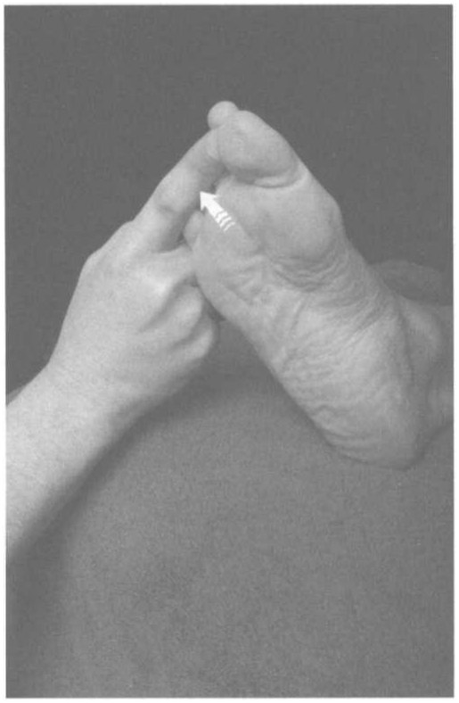
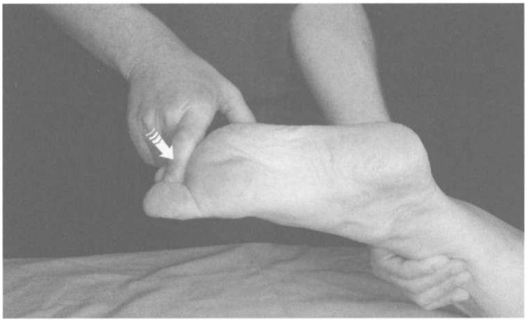
Các chức năng của nhóm cơ chi dưới
CƠ XOAY NGOÀI
HÔNG
1. Cơ hình lê
2. Cơ sinh đôi trên
3. Cơ bịt lỗ trong
4. Cơ sinh đôi dưới
5. Cơ bịt lỗ ngoài
6. Cơ vuông đùi
7. Cơ mông lớn (phần cắt)
8. Cơ may (không thể hiện)
CƠ XOAY TRONG
HÔNG
1. Cơ mông vừa
2. Cơ mông nhỏ
3. Cơ căng mạc đùi (tensor fasciae latae)
4. Cơ khép lớn, đầu trước (không
thể hiện)
Chi dưới 117

118 Neuro Kinetic Therapy
CƠ GẬP
HÔNG
1. Cơ thắt lưng lớn (psoas) và cơ chậu
2. Cơ lược
3. Cơ căng mạc đùi (tensor fasciae latae)
4. Cơ khép ngắn
5. Cơ khép dài
6. Cơ khép lớn (đầu trước)
7. Cơ thẳng đùi
8. Cơ may
CƠ DUỖI
HÔNG
1. Cơ mông lớn
2. Cơ nhị đầu đùi (đầu dài)
3. Cơ bán gân
4. Cơ bán màng
5. Cơ khép lớn
(đầu sau)
-6
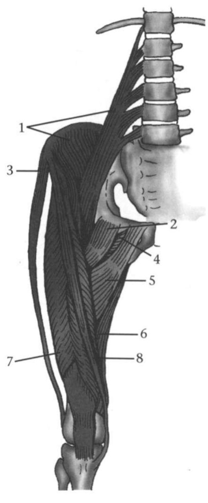

CƠ GIANG
HÔNG
1. Cơ mông vừa
2. Cơ mông nhỏ
3. Cơ căng mạc đùi (tensor fasciae latae)
4. Cơ may
CƠ KHÉP
HÔNG
1. Cơ khép ngắn
2. Cơ khép dài
3. Cơ khép lớn
4. Cơ duyên
5. Cơ lược
Chi dưới 119

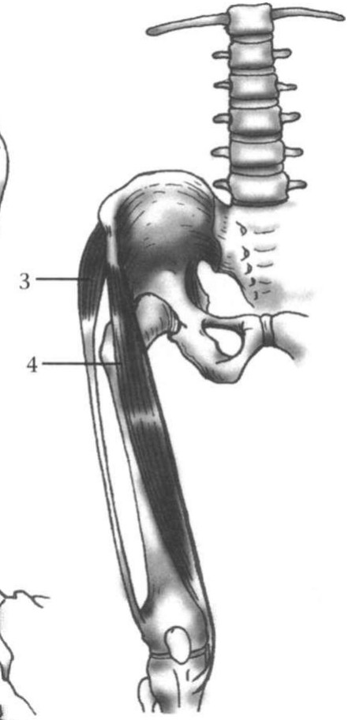

120 Neuro Kinetic Therapy
CƠ XOAY NGOÀI (BÊN
NGOÀI)
CỦA GỐI
1. Cơ nhị đầu đùi
CƠ XOAY TRONG (BÊN
TRONG)
CỦA GỐI
1. Cơ bán gân
2. Cơ bán màng
3. Cơ khoeo
4. Cơ duyên
5. Cơ may
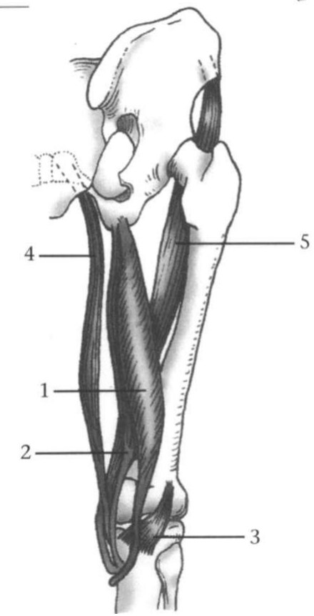
CƠ GẬP
GỐI
1. Cơ nhị đầu đùi
2. Cơ bán gân
3. Cơ bán màng
4. Cơ may
5. Cơ duyên
6. Cơ bắp chân (gastrocnemius)
7. Cơ khoeo
CƠ DUỖI
GỐI
1. Cơ rộng ngoài
2. Cơ rộng giữa
3. Cơ rộng trong
4. Cơ thẳng đùi
5. Cơ căng mạc đùi (tensor fasciae latae)
Chi dưới 121
3.
5.
6-
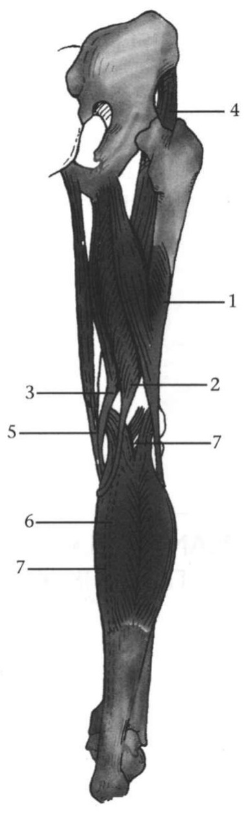

122 Neuro Kinetic Therapy
CƠ GẬP LƯNG
CỔ CHÂN
1. Cơ chày trước
2. Cơ duỗi ngón dài
3. Cơ mác thứ ba
4. Cơ duỗi ngón cái dài
CƠ GẬP GAN BÀN CHÂN
CỔ CHÂN
1. Cơ bắp chân (gastrocnemius)
2. Cơ bẹp (soleus)
3. Cơ gan bàn chân (plantaris)
4. Cơ mác dài
5. Cơ mác ngắn
6. Cơ chày sau
7. Cơ gập ngón cái dài
8. Cơ gập ngón dài
(không thể hiện)


CƠ LẬT TRONG
BÀN CHÂN
1. Cơ chày trước
2. Cơ chày sau
CƠ LẬT NGOÀI
BÀN CHÂN
1. Cơ mác thứ ba
2. Cơ mác dài
3. Cơ mác ngắn
Chi dưới 123